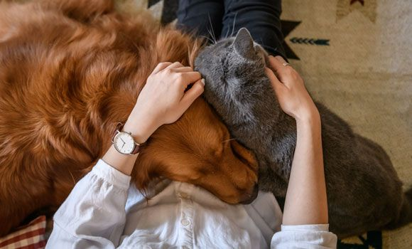

According to the PLOS One website, where the study by Alice Potter and Daniel Mills is published, it involved twenty guardian-cat pairs. The cats were placed in two rooms with two chairs (one for the guardian and one for a stranger) along with some cat toys and covered windows. A video camera taped the interaction between each cat, the guardian and the stranger during a variety of behaviors (guardian leaving and returning, stranger leaving and returning, etc.) The researchers used a test known as the “Ainsworth Strange Situation” to gauge the behavior of the cats in terms of how much attachment the cats appeared to have with their guardians.
Researchers found that cats in the test did vocalize more when their guardian left, compared to the stranger leaving, but they “didn’t see any additional evidence to suggest that the bond between a cat and guardian is one of secure attachment.”
The researchers indeed found that “many aspects of the behavior of cats…are not consistent with the characteristics of attachment.” However, they also noted that the test did not look into whether there may be differences in attachment between cats that are indoor only and indoor/outdoor, and they also noted that the test they used may not have been an effective instrument to determine cats’ attachments to guardians. Specifically, they stated that “…we do not wish to imply that cats do not form some form of affectionate social relationship or bond with their owners…only that the relationship with the primary caregiver is not typically characterized by a preference for that individual based on them providing safety and security for the cat.”
What this means is that cats do not display the same sort of attachment to their guardians that dogs do in terms of seeing the guardian as a source of safety and display more behaviors that we would term “independent.” This does not mean at all that cats do not enjoy their relationship with their guardians – they simply seek human companionship for different reasons and in different ways from canines.
For example, the study found that when using the Ainsworth test with dogs, standing by the door, where the guardian had exited, was a key measure for determining attachment and even separation anxiety. They did not see this behavior among the cats in the study, but that may not be because cats don’t miss you – the researchers note this could be due to the fact that “cats do not show distress in this way.”
Within a cat’s social network, you do not see the same kind of strong social bonds that you will see in groupings of dogs. This may be due to cats being more solitary hunters and not needing to bond as closely with social groups in order to survive1.
Unlike dogs, who have been working and living with humans far longer, cats do not look to people for their daily needs. However, they do clearly form social bonds with their owners and show “affectionate” behavior, as well as a preference for their guardian(s) over non-household humans. In short, don’t let catchy headlines make you doubt your cat’s love.